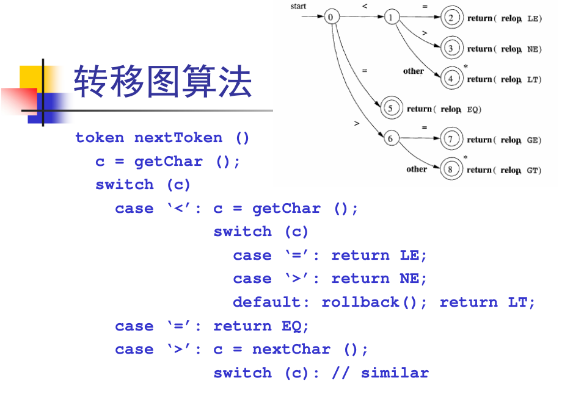

词法分析器Part1
2017-3-14 21:58:14 by 郭某某
※第一讲：词法分析的任务※
源程序->前端->中间表示
中间表示->后端->目标机
前端->源程序 词法分析器 记号流 语法分析器 抽象语法树 语义分析器 中间表示
词法分析器任务：
读入程序员写的程序，然后对字符流切分，转化为记号流。
字符流到记号流
字符流：和被编译的语言相关（ASCII,Unicode）
ASCII:C
Unicode:Java
记号流：编译器内部定义的数据结构，编码所识别出的词法单元。
关键字 字符流 回车符\n \r\n ASCII码是10 输入流 结束 EOF
字母 单词 引号给整体一起
记号 IDENT
·1数据结构定义
enum kind { IF,LPAREN,ID,INTLIT, ...};
struct token{
enum kind k;
char *lexeme;
}
·2算法实现
下一讲中讲
※第二讲：词法分析器的手工构造※
源程序->词法分析器->记号流->语法分析器->抽象语法树->语义分析器->中间表示
词法分析器的任务：将字符流变成记号流
词法分析器的实现方法，目前两种实现方案：
1、手工编码实现法
是目前比较流行的实现方法，但相对复杂容易出错
目前成功例子：GCC、LLVM、......
2、词法分析器的生成器
可快速原型、代码量较少，但较难控制细节不便于优化

a-zA-Z
a-zA-Z0-9
标识符与关键字
从词法分析器的角度看，关键字是标识符的一部分
以C语言为例：
标识符：以字母或下划线开头，后面跟零个或多个字母、下划线、或数字
关键字：if,while,else,...
关键字表
将关键字构建关键字哈希表H
对所有的标识符和关键字，先统一按标识符的转移图进行识别
识别完成后，进一步查看表H看是否是关键字
哈希表H作用：完美哈希
可以再O(1)时间内完成
※第三讲：正则表达式※
字符流->词法分析器->记号流
声明式的规范：指出目标规则
工具：lex,flex,jlex
声明式的规范（百行）
词法分析器（千行）
写声明式的规范，减少工作量
所以写声明式的规范，然后利用工具生成词法分析器
正则表达式 算数表达式
对给定的字符集∑={c1,c2,c3,c4,...,cn}
归纳定义：
1、空串""是正则表达式
2、对于任意c∈∑，c是正则表达式
3、如果M和N都是正则表达式，则以下都是正则表达式
选择 M|N={M,N}
连接 MN={mn|m∈M,n∈N}
闭包 M*={"",M,MM,MMM,...}
如何用珍珠铬表达式表示？
∑=ASCII
if：i∈∑,f∈∑
while 同理
C语言中的标识符，例如i0,num1等
如何用珍珠铬表达式表示？
①开头26+26+1（小写字母，大写字母，下划线）
②后面26+26+1+10（小写字母，大写字母，下划线,0-9）
(①)(②)*
语法糖
赋值 转移
※第四讲：有限状态自动机※
自动式
输入的字符串->有限状态自动机FA->{yes,no}
对任意的字符，最多有一个状态可以转移
非确定有限状态自动机NFA
对任意的字符，有多于一个状态可以转移
有向图：
①信息
②带点
以上内容学习自网易云课堂鸣谢！